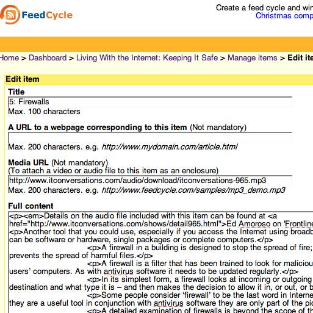
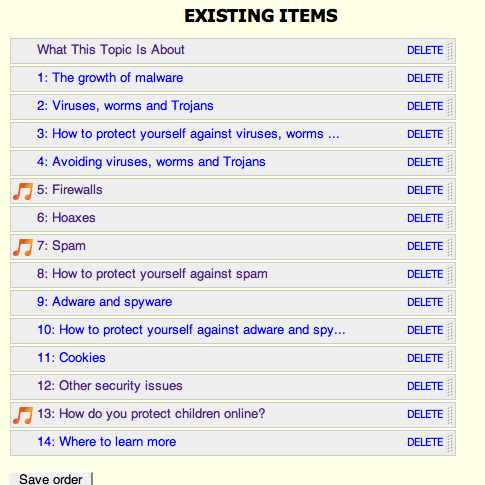
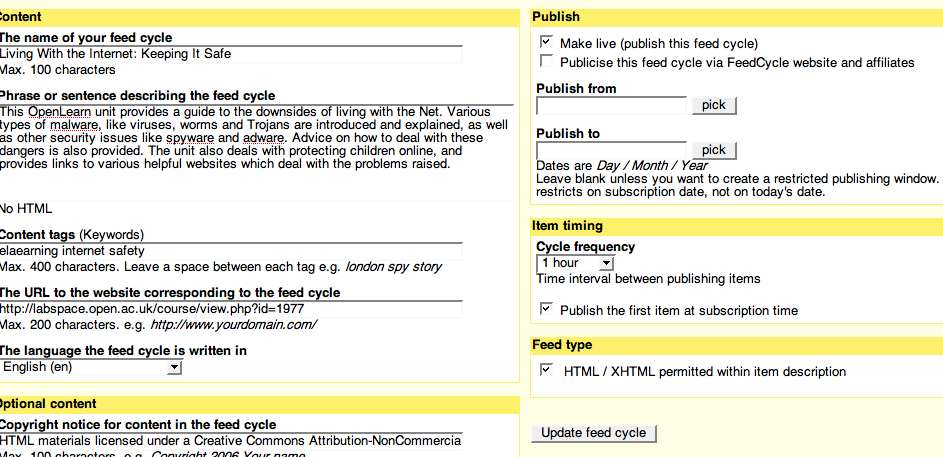

Several bloggers picked up today on FeedCycle, a new web application for managing serialised RSS feeds:
A serialised RSS web feed enables a subscriber to receive, perhaps on a daily basis, sequential episodes from within a series of episodes. The subscriber always starts at the beginning regardless when they start their subscription.
(The feed you subscribe to has a timestamp argument - now why didn't I think of that? Producing my own scheduled feeds via a simple feed relay that takes an original subscription timestamp and desired duty cycle should only take a handful of lines of PHP....)
Anyway, anyway - having already got a web feed creation route set up (after a fashion) for OpenLearn/LabSpace content, I couldn't wait to try out FeedCycle. Free (limited) accounts are available so I set one up to use the T180 Living with the internet: keeping it safe content.
At the moment, getting content into FeedCycle seems a bit clunky. I would have like to import my own RSS feed, but instead I had to copy and paste items one at a time into the FeedCycle editor.

Pasting HTM L directly is perfectly acceptable - FeedCycle automatically wraps the content in CDATA tags. It's also possible to add a media enclosure to a feed item (so I added in a couple of related presentations from IT Conversations).
Once you've got the content in, the ability to reorder items is quite useful:

The frequency with which feed items are published can be set from 1 hour to about 30 days. It would be handy if this could be handled via another URL argument. I originally started out testing the feed with an hourly publishing rate, but for the link below it's set at one item per day. It's not possible (at the moment) to generate URLs for the same cyclic feed with different delivery/publication rates, nor is it possible to copy a whole feed and use it as the basis for another (e.g. with just a different publication rate).

Delivering training materials via FeedCyle is one of the suggested commercial applications. However, I think there is great potential for publishing OpenLearn content in this way.
The OpenLearn material is already chunked into short sections, ideal for consuming via a feed on a daily basis.
Just like 'tip of the day', materials can be delivered one small chunk at a time once per day to the informal learner's feed reader. For learners who can get into the habit of looking at the feed once every day or two, the course material will be delivered in a sensibly paced way, and will not overload the learner in advance.
There are issues in not being able to get ahead, of course. But there are a couple of workarounds: one is to look at the whole course feed; another is to resubscribe to the feed with a backdated timestamp (it would be easy enough to build a tool to support this). It would be neat if FeedCycle could support a 'send me the next item now' service - maybe that's on the cards?
Anyway - I know you're itching to try it out ;-) so here's the T180 Living With the Internet: Keeping It Safe block as a paced feed (items delivered according to a daily schedule). If you're reading this via a feed reader, you'll probably need to click through to the actual blog page because the timestamped feed subscription link is generated via a Javascript include:
Here's the paced feed link -
Once subscribed, you'll get one section/item per day in your feedreader for the next fortnight.
If you give it a go and have either success in consuming the feed, or grief consuming it, please let me know...
And if anyone out there is interested in developing this a bit further, maybe helping tighten up the OpenLearn/LabSpace XML2RSS stylesheet (or markup generated by it), working on automation routes for mining LabSpace ;-), developing a custom, lightweight FeedCycle inspired script suited to educational use, or generally helping to create a daily learning chunks platform to help push LabSpace sourced content (maybe remixed with other OCW content), please get in touch.... :-)
Posted by ajh59 at November 27, 2006 05:02 PMThis would be good one to try it out on: http://infocult.typepad.com/dracula/index.rdf
Currently they manage this through the timing of the entries rather than in clever feed things...
Posted by: Scott Wilson at November 28, 2006 01:28 PMHi,
On FeedCycle you can now import an existing feed - no more cutting and pasting!
Apologies it wasn't there when you reviewed it.
Thanks for your feedback - this is what keeps us focussed!
Alex
FeedCycle